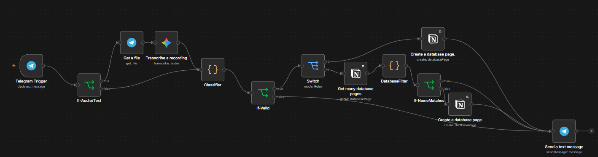
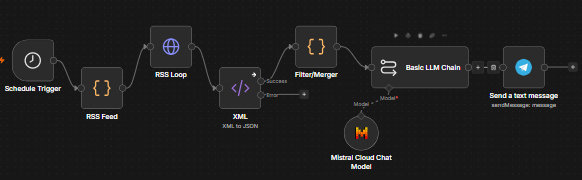
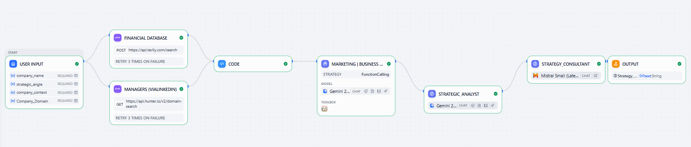

AIPreplyCopilot
A Telegram-to-Notion lesson logger built with n8n. Logs lessons from a voice or text message in seconds.
n8n, Telegram API, Notion API, Gemini, JavaScript
GitHubBSc Business Administration @UniPi | Building stuff to fail better.
I hate friction and bureaucracy. That's why I build systems: smooth workflows and durable knowledge.
When I work, I think about one thing: how is this going to help me in the future? When I have an answer, I move. I make mistakes, I adjust, and I optimize until something useful comes out.
Check my projects to see what I've been working on during my university years.
Let's stay in touch: LinkedIn


AIA Telegram-to-Notion lesson logger built with n8n. Logs lessons from a voice or text message in seconds.
n8n, Telegram API, Notion API, Gemini, JavaScript
GitHub
AIA morning news brief from RSS to Telegram. The code selects, the language model only rewrites.
n8n, RSS, Mistral, JavaScript
GitHub KaggleA Markowitz optimizer with bootstrap confidence intervals.
Python, yfinance, Quantitative Finance
GitHub KaggleA Core-Satellite investment model in Excel, with a live Tableau layer.
Excel, Tableau, Quantitative Finance
GitHub Kaggle
AIEarly project, retired.
Built to test AI orchestration for market research. The market didn't need it, so I stopped.
Dify, Gemini, Tavily, Hunter.io
GitHub KaggleA live view of the Core-Satellite portfolio: risk metrics, benchmark comparison, and drawdown analysis.
View on Tableau PublicFrom the Versilia beaches to a Dutch classroom to the first build, an ongoing journey.
Università di Pisa
Graduation date: 3 November 2026.
Coursework: Macroeconomics, Statistics, Marketing, Corporate Finance.

Villa Roma Imperiale · Forte dei Marmi
Front-of-house service for international guests under pressure.
Starting Finance Club UniPi
Educational content about economics and finance, written for students.


Weekly explainers on NVIDIA's history, written for students.
Fontys Venlo University of Applied Sciences
Coursework: Data Analytics, Advanced Statistics, Controlling and Cost Accounting.

me and my roommates, sorry I could not find a more serious photo :)
Principino · Viareggio
Large-scale events up to 500 guests; promoted mid-contract.
Bagno Orizzonte · Lido di Camaiore
Beach hospitality across two seasons, funding my studies.
Three things shaped how I work. None of them are jobs.
Spent 15 years staring at the black line on the bottom of a pool.
Raw discipline and consistency: no shortcuts, you show up or the clock proves you didn't.
Ability to execute under physical and mental fatigue.
Long-term commitment: complex results are just the accumulation of small, daily repetitions.


Playing chess for about a decade.
Pattern recognition and catching small details before they become a problem.
Patience over impulse: slowing down and thinking ahead when things get complicated.
Moving out for my Erasmus in the Netherlands, plus traveling through places like Taiwan and Thailand.
Adapting quickly to new environments and feeling comfortable outside my comfort zone.
Realizing there is rarely just one way to approach a problem.